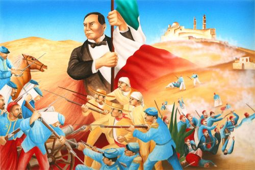
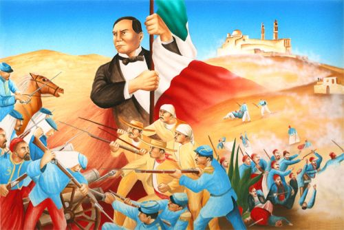

Batalla del 5 de mayo

En los fuertes de Loreto y Guadalupe, en Puebla, tuvo lugar un hecho historico: un pequeno ejercito mexicano derroto a los franceses, dando a los mexicanos un motivo para celebrar durante anos. Este acontecimiento ocurrio el cinco de mayo de 1862, cuando el ejercito invasor frances fue abatido por un batallon mexicano en una proporcion de dos a uno. Los fuertes donde ocurrieron tales batallas hoy pertenecen al Centro Civico Cinco de Mayo, y pueden ser visitados en las afueras de la ciudad.
Ubicado en el antiguo cerro Acueyametepec se encuentra el Fuerte de Loreto que actualmente funciona como Museo de la no intervencion.
Desde la fundacion de la ciudad de Puebla este cerro, al igual que el de Guadalupe, era conocido como de Belen porque ahi se encontraba una ermita dedicada a esa advocacion. En 1816 las construcciones que se encontraban fueron fortificadas para resistir las fuerzas de los independentistas, es decir se les puso revestimientos de cal y una muralla. Posteriormente fungio como polvorin.
Cabe senalar que durante la batalla del 5 mayo de 1862 en contra de los franceses en este fuerte no se realizaron acciones, pero en 1930 se le declaro como propiedad de la nacion al servicio del pueblo y fue hasta 1936 cuando se convirtio en Museo de Guerra.
El Fuerte de Loreto es tambien el museo de la NO intervencion.
Con la conmemoracion del centenario de la Batalla del 5 de mayo en 1962 este museo se amplio y se le colocaron nuevas piezas y objetos, en general se renovo la museografia. El apoyo del presidente Adolfo Lopez Mateos fue crucial en el museo ya que lo convirtio en Museo de la No intervencion y lo remodelo completamente.
Actualmente cuenta con seis salas: en la capilla al costado del inmueble se exhiben banderas de los diferentes paises de America Latina y sobre todo los simbolos patrios de Mexico (la Bandera, el Escudo y el Himno Nacional), en esta seccion tambien podemos encontrar un mural de Ramirez Osorio en el que se representan a los hombres que intervinieron en la guerra de reforma. En la sala numero dos podemos encontrar documentos que nos muestran la situacion politica y economica en la que vivia Mexico durante la segunda mitad del siglo XIX, para asi poder identificar las causas de la intervencion francesa, por otro lado tambien se encuentran mapas en los que podemos conocer la geografia poblana de la epoca.
La sala tres se encuentra dedicada al General Ignacio Zaragoza y en la cuatro podemos observar los uniformes de los soldados que combatieron en la Batalla del 5 de mayo. En la Sala cinco podemos descubrir todos los aspectos relacionados con el ejercito frances y el apoyo que recibieron de los conservadores mexicanos. Este museo esta abierto de martes a domingo de 9:00 a 18:00 horas y los domingos la entrada es gratuita.

Ubicado en el antiguo cerro Acueyametepec se encuentra el Fuerte de Loreto que actualmente funciona como Museo de la no intervencion. Desde la fundacion de la ciudad de Puebla este cerro, al igual que el de Guadalupe, era conocido como de Belen porque ahi se encontraba una ermita dedicada a esa advocacion. En 1816 las construcciones que se encontraban fueron fortificadas para resistir las fuerzas de los independentistas, es decir se les puso revestimientos de cal y una muralla. Posteriormente fungio como polvorin.
Cabe senalar que durante la batalla del 5 mayo de 1862 en contra de los franceses en este fuerte no se realizaron acciones, pero en 1930 se le declaro como propiedad de la nacion al servicio del pueblo y fue hasta1936 cuando se convirtio en Museo de Guerra.
El Fuerte de Loreto es tambien el museo de la NO intervencion.
Con la conmemoracion del centenario de la Batalla del 5 de mayo en 1962 este museo se amplio y se le colocaron nuevas piezas y objetos, en general se renovo la museografia. El apoyo del presidente Adolfo Lopez Mateos fue crucial en el museo ya que lo convirtio en Museo de la No intervencion y lo remodelo completamente.
Actualmente cuenta con seis salas: en la capilla al costado del inmueble se exhiben banderas de los diferentes paises de America Latina y sobre todo los simbolos patrios de Mexico (la Bandera, el Escudo y el Himno Nacional), en esta seccion tambien podemos encontrar un mural de Ramirez Osorio en el que se representan a los hombres que intervinieron en la guerra de reforma.
En la sala numero dos podemos encontrar documentos que nos muestran la situacion politica y economica en la que vivia Mexico durante la segunda mitad del siglo XIX, para asi poder identificar las causas de la intervencion francesa, por otro lado tambien se encuentran mapas en los que podemos conocer la geografia poblana de la epoca.
La sala tres se encuentra dedicada al General Ignacio Zaragoza y en la cuatro podemos observar los uniformes de los soldados que combatieron en la Batalla del 5 de mayo. En la Sala cinco podemos descubrir todos los aspectos relacionados con el ejercito frances y el apoyo que recibieron de los conservadores mexicanos. Este museo esta abierto de martes a domingo de 9:00 a 18:00 horas y los domingos la entrada es gratuita.

Ignacio Zaragoza Seguin(24 de marzode1829-8 de septiembrede1862) fue un militarmexicanoreconocido como el heroe de laBatalla de Puebla, que tuvo lugar el5 de mayode1862. Conde de Lorencez, militarfrances, mejor conocido solo comoConde de Lorencez, hijo deGuillaume Latrille de Lorencez, fue un militar frances que participo enlasegunda intervencion francesa en Mexico, liderando al ejercito frances en labatalla de Puebla.
Ignacio Zaragoza Seguin (24 de marzo de 1829-8 de septiembre de 1862) fue un militar mexicano reconocido como el heroe de la Batalla de Puebla, que tuvo lugar el 5 de mayo de 1862.
Al amanecer del 5 de mayo de 1862, el Gral.
Ignacio Zaragoza arenga a sus soldados: "Nuestros enemigos son los primeros soldados del mundo, pero vosotros sois los primeros hijos de Mexico y os quieren arrebatar vuestra patria".
Ordena a Miguel Negrete dirigir la defensa por la izquierda; a Felipe Berriozabal por la derecha y a Porfirio Diaz que este junto a el.
Tras varias horas de lucha, la batalla no se decide, se enfrentan cuerpo a cuerpo, mexicanos y franceses, finalmente, los invasores se retiran mientras Zaragoza grita: "Tras ellos, a perseguirlos, el triunfo es nuestro". El ejercito frances considerado el mejor del mundo en ese tiempo, un ejercito profesional, al mando del General Conde de Lorencez, era derrotado estrepitosamente.
Los indigenas zacapoaxtlas, con machete y cuchillo en mano, los persiguieron y acabaron con muchos soldados franceses, zuavos (tropa elite del ejercito frances). El informe que el general Ignacio Zaragoza rindio sobre la Batalla de Puebla al Secretario de Guerra Miguel Blanco Muzquiz fue breve y significativo: "Las armas nacionales se han cubierto de gloria. Las tropas francesas se portaron con valor en el combate y su jefe con torpeza".


Militar frances, mejor conocido solo como Conde de Lorencez, hijo de Guillaume Latrille de Lorencez, fue un militar frances que participo en la segunda intervencion francesa en Mexico, liderando al ejercito frances en la batalla de Puebla.
El cinco de mayo de 1862, Lorencez se presenta al frente de su ejercito, ante la ciudad de Puebla, con la intencion de tomarla a viva fuerza Lorencez, despreciando a su enemigo, mando un mensaje demasiado arrogante a Napoleon III, en el cual expresaba: "Somos tan superiores a los mexicanos, en organizacion, en disciplina, raza, moral y refinamiento de sensibilidades, que desde este momento, al mando de nuestros 6000 valientes soldados, ya soy el amo de Mexico"'.
Suponia que le seria muy facil vencer a las tropas mexicanas y desoyendo los consejos de los conservadores.
Lorencez ataco prematuramente la ciudad; las tropas mexicanas del Ejercito de Oriente, comandadas por Zaragoza, rechazaron con valentia al ejercito frances en tres ocasiones, ayudadas por la inadecuada planeacion y ejecucion de sus asaltos, sorprendiendo la decision con que los mexicanos efectuaron sus acciones defensivas; todavia, durante el tercer intento, se desato una tormenta que arruino la polvora y la artilleria de Lorencez, quien se vio obligado a retirarse, humillado y vencido.


La Batalla de Puebla es un simbolo de unidad y patriotismo para los mexicanos.
Finalmente, ante la incapacidad de consolidar un imperio y despues de perder 11000 hombres debido a la actividad guerrillera que nunca dejo de subsistir,los franceses se retiraron incondicionalmente del pais en 1867.
Con esa victoria, Mexico le demostro al mundo que las naciones latinoamericanas eran autonomas y capaces de resistir los embates imperialistas que buscaban conquistar el mundo.
Fue un combate librado el 5 de mayo de 1862 en las cercanias de la ciudad de Puebla, entre los ejercitos de la Republica Mexicana, bajo el mando de Ignacio Zaragoza, y del Segundo Imperio Frances, dirigido por Charles Ferdinand Latrille, conde de Lorencez, durante la Segunda Intervencion Francesa en Mexico,
cuyo resultado fue una victoria importante para los mexicanos ya que con unas fuerzas consideradas como inferiores lograron vencer a uno de los ejercitos mas experimentados y respetados de su epoca.
Despues de los excesos de la dictadura santannista y las batallas de la guerra de Reforma, Mexico se encontraba en bancarrota sin poder saldar sus deudas con los paises acreedores.
En 1862 las armadas de Espana, Inglaterra y Francia desembarcaron en Veracruz dispuestas a cobrar sus prestamos.
Despues de negociar con el representante de Mexico Espana e Inglaterra se retiraron.
Napoleon III, Emperador del Segundo Imperio Frances queria establecer una monarquia favorable para Francia, y asimismo, queria disolver el Gobierno Constitucional Mexicano.
Las fuerzas francesas al mando del general Lorencez se componian de (7.000) siete mil soldados que salieron hacia la ciudad de Mexico.
El Presidente Juarez le dio la orden al General Ignacio Zaragoza de detener el avance de las fuerzas armadas francesas en los fuertes de Loreto y Guadalupe cerca de la ciudad de Puebla. Zaragoza contaba con solo (2,000) dos mil hombres.
 

El 5 de mayo de 1862, los canones resonaron y los rifles dispararon y mas de (1,000) mil soldados franceses cayeron muertos. Los mexicanos habian ganado la batalla, pero no la guerra.
Sin embargo, esta fecha es la que simboliza el valor mexicano ante una armada tan formidable.
Derrotadas en la batalla de Puebla, se refugiaron en Orizaba mientras esperaban refuerzos para proseguir la ofensiva. Mientras tanto, Luis Bonaparte, el ambicioso sobrino de Napoleon I, se alio con grupos de conservadores mexicanos para imponer un rey europeo en el pais.
Para junio de 1864, Maximiliano de Habsburgo y su esposa Carlota (austriacos) llegaron a la ciudad de Mexico para tomar posesion del recien formado Imperio Mexicano y fueron coronados como el Emperador y la Emperatriz de Mexico.
Los republicanos, al mando de Benito Juarez, no aceptaron la intervencion extranjera. Se refugiaron en el norte del pais y les pidieron ayuda a los californianos y a otras sociedades mexicano-norteamericanas con financiamiento y voluntarios para la lucha.
Estados Unidos al termino de su guerra civil, presiono a Francia para que se retiraran.
El retiro de las fuerzas francesas en 1867 fue obligado. Maximiliano, indefenso, tuvo que recurrir a sus antiguos aliados conservadores, los generales Miramon y Mejia, pero ya era demasiado tarde.
Derrotados en Queretaro, fueron fusilados en el cerro de las Campanas.